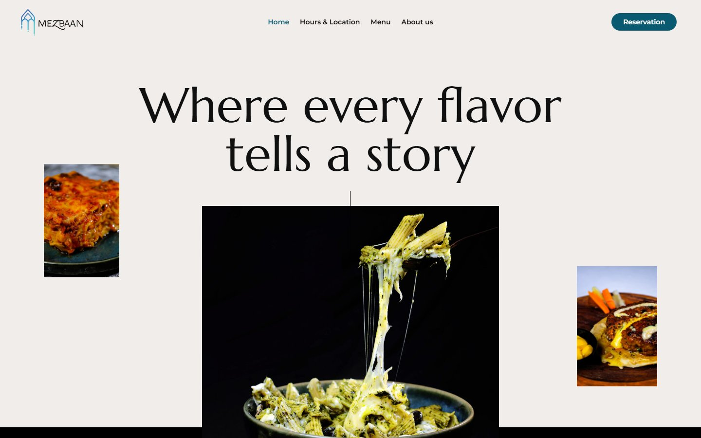
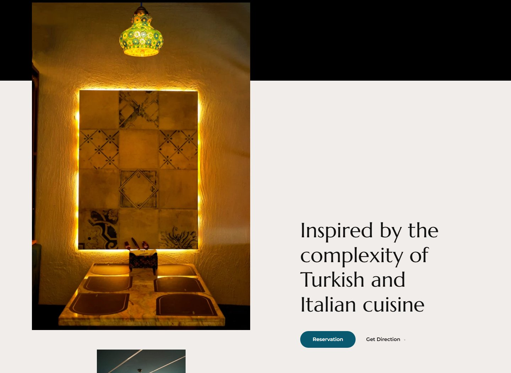
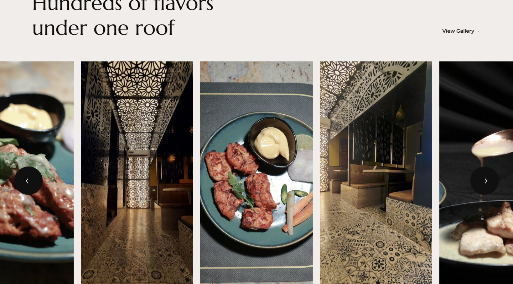

The live website for Mezbaan, a Turkish-Italian restaurant in Ambur. The brief was to make the food and the room carry the site — large, dark, high-contrast photography of both the plates and the Moroccan-tiled, lantern-lit interior, with just enough copy to set the concept.
"Where every flavor tells a story" over a cheese-pull hero shot — food photography as the first and loudest thing on the page, not a logo or a nav bar.

The dining room itself — Moroccan-patterned screens lit from behind, warm brass, dark tile — used as editorial photography rather than a generic "our restaurant" gallery shot.

"Hundreds of flavors under one roof" — a horizontal-scroll gallery mixing plated dishes with room details, keeping food and atmosphere in the same visual rhythm.
